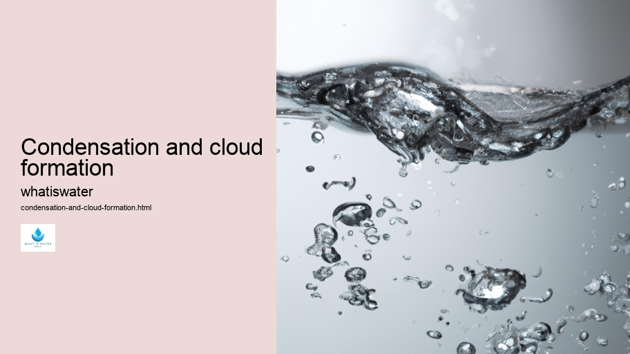

Hydrological Cycle
Hydrological Cycle
Evaporation and transpiration
Condensation and cloud formation
Precipitation and rain patterns
Surface runoff and river systems
Groundwater flow and aquifers
Snowmelt and glacial processes
Water storage in oceans lakes and reservoirs
Soil moisture and infiltration
Water balance and budgeting
Human impact on the hydrological cycle
Marine Ecosystems
Marine Ecosystems
Coral reefs and their biodiversity
Mangrove forests as coastal protectors
Ocean currents and climate regulation
Deepsea habitats and extremophiles
Intertidal zones and estuarine ecosystems
Marine food webs and trophic levels
Freshwater Ecosystems
Freshwater Ecosystems
Conservation efforts for marine species
Marine biogeochemical cycles
Impact of global warming on oceans
Water Resource Management
Water Resource Management
Rivers streams and creeks ecosystems
Lakes ponds wetlands habitats
Biodiversity in freshwater environments
Aquatic plants role in oxygenation
Freshwater fish species diversity
Invasive species impact on freshwater systems
Pollution threats to freshwater sources
Conservation strategies for freshwater biomes
Role of wetlands in flood control
Importance of riparian buffers
Cultural Significance of Water
Cultural Significance of Water
Sustainable water use practices
Desalination technologies for fresh water supply
Wastewater treatment processes
Rainwater harvesting techniques
Management of water during drought conditions
Transboundary water resource politics
Infrastructure for water distribution
Agricultural irrigation efficiency
Urban water demand management
Impact of climate change on water resources
About Us
Contact Us

Condensation and cloud formation
>
Water Softening
Condensation and cloud formation are intrinsic phenomena in our planet's weather system, but before diving into their complexities, let us start with the molecular dance that leads to these occurrences. When water vapor in the air cools down, it transitions from a gaseous state to a liquid state; this process is known as condensation.
To understand this transformation, imagine countless tiny water molecules suspended in Earth's atmosphere.
Droughts
As these molecules travel upwards, they encounter cooler temperatures at higher altitudes—a result of the atmosphere becoming thinner and less able to hold heat. This cooling causes the energetic, invisible water vapor molecules to slow down. Losing energy, they begin to clump together or "condense" on small particles like dust or sea salt—known as condensation nuclei—in the air.
This gathering of water droplets around each nucleus eventually becomes visible as clouds—a majestic testament to nature's artistry. Clouds vary widely in shape and size: from thin wisps stretching across vast skies to towering cumulonimbus structures signaling storms.
Condensation and cloud formation - Droughts
Droughts
H2O
Water Education
Bottled Water
Wetlands
Molecule
Clouds are not merely aesthetic; they play a crucial role in earth's climatic patterns by reflecting sunlight away and providing shade which can influence local temperatures. They also act as moving reservoirs that transport water across continents and release it as precipitation—rain or snow depending on temperature conditions at ground level.
The cycle of evaporation-condensation-precipitation is fundamental for sustaining life on Earth, replenishing fresh water supplies for humans, animals, and plants alike. Without this continuous cycle driven by solar energy and atmospheric dynamics, our world would be starkly different.
In conclusion, condensation and cloud formation are more than just simple scientific processes; they are vital cogs within Earth’s grand ecological machine that ensure our survival through their intricate interplay with other elements of the environment. Understanding them helps us appreciate not only the beauty above us but also underscores our responsibility towards maintaining Earth's delicate balance.
H2O
Hydrological Cycle
Check our other pages :
Ocean currents and climate regulation
Water Resource Management
Impact of global warming on oceans
Rivers streams and creeks ecosystems
Frequently Asked Questions
What causes condensation and cloud formation?
Condensation and cloud formation occur when water vapor in the air cools down to its dew point temperature and changes from a gaseous state to liquid droplets. This often happens when warm, moist air rises, expands, and then cools in the atmosphere. The tiny water droplets or ice crystals that form clump together to become visible as clouds.
How do different types of clouds form?
Different types of clouds form based on factors like altitude, atmospheric conditions, and temperature. For instance, cumulus clouds form due to thermal convection at lower altitudes; cirrus clouds are created by the freezing of water vapor at high altitudes; stratus clouds result from a more widespread layering of moist air at low altitude.
What role does temperature play in condensation and cloud formation?
Temperature is crucial for condensation because it determines whether the air can hold moisture. Warm air can contain more water vapor than cold air. When air containing water vapor cools down to its dew point, the excess moisture condenses into liquid water droplets or ice crystals if below freezing, which can lead to cloud formation.
Why do some clouds produce precipitation while others do not?
Whether a cloud produces precipitation depends on the size and number of water droplets or ice crystals within it. If these particles are too small, theyll remain suspended in the air. Precipitation occurs when these particles grow larger by colliding with each other and eventually become heavy enough to fall to Earths surface due to gravity.
Can we predict weather patterns based on cloud formations?
Yes, meteorologists use cloud formations as one indicator among many to predict weather patterns. Certain cloud types are associated with specific weather conditions—for example, cumulonimbus clouds may indicate thunderstorms while cirrus clouds could signal a change in weather patterns. By observing cloud shape, type, movement, and other atmospheric data points like humidity and wind speed/directions forecasters make predictions about upcoming weather events.